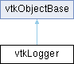

|
Etrek
|
|
Etrek
|
logging framework for use in VTK and in applications based on VTK More...
#include <vtkLogger.h>

Classes | |
| struct | Message |
| class | LogScopeRAII |
Public Types | |
| enum | Verbosity { VERBOSITY_INVALID = -10 , VERBOSITY_OFF = -9 , VERBOSITY_ERROR = -2 , VERBOSITY_WARNING = -1 , VERBOSITY_INFO = 0 , VERBOSITY_0 = 0 , VERBOSITY_1 = +1 , VERBOSITY_2 = +2 , VERBOSITY_3 = +3 , VERBOSITY_4 = +4 , VERBOSITY_5 = +5 , VERBOSITY_6 = +6 , VERBOSITY_7 = +7 , VERBOSITY_8 = +8 , VERBOSITY_9 = +9 , VERBOSITY_TRACE = +9 , VERBOSITY_MAX = +9 } |
| enum | FileMode { TRUNCATE , APPEND } |
| using | LogHandlerCallbackT = void (*)(void* user_data, const Message& message) |
| using | CloseHandlerCallbackT = void (*)(void* user_data) |
| using | FlushHandlerCallbackT = void (*)(void* user_data) |
Public Member Functions | |
| vtkBaseTypeMacro (vtkLogger, vtkObjectBase) | |
| void | PrintSelf (ostream &os, vtkIndent indent) override |
| Public Member Functions inherited from vtkObjectBase | |
| const char * | GetClassName () const |
| virtual std::string | GetObjectDescription () const |
| virtual vtkTypeBool | IsA (const char *name) |
| virtual vtkIdType | GetNumberOfGenerationsFromBase (const char *name) |
| virtual void | Delete () |
| virtual void | FastDelete () |
| void | InitializeObjectBase () |
| void | Print (ostream &os) |
| void | Register (vtkObjectBase *o) |
| virtual void | UnRegister (vtkObjectBase *o) |
| int | GetReferenceCount () |
| void | SetReferenceCount (int) |
| bool | GetIsInMemkind () const |
| virtual void | PrintHeader (ostream &os, vtkIndent indent) |
| virtual void | PrintTrailer (ostream &os, vtkIndent indent) |
| virtual bool | UsesGarbageCollector () const |
Static Public Member Functions | |
| static void | SetStderrVerbosity (Verbosity level) |
| static void | SetInternalVerbosityLevel (Verbosity level) |
| static void | LogToFile (const char *path, FileMode filemode, Verbosity verbosity) |
| static void | EndLogToFile (const char *path) |
| static std::string | GetIdentifier (vtkObjectBase *obj) |
| static void | AddCallback (const char *id, LogHandlerCallbackT callback, void *user_data, Verbosity verbosity, CloseHandlerCallbackT on_close=nullptr, FlushHandlerCallbackT on_flush=nullptr) |
| static bool | RemoveCallback (const char *id) |
| static bool | IsEnabled () |
| static Verbosity | GetCurrentVerbosityCutoff () |
| static Verbosity | ConvertToVerbosity (int value) |
| static Verbosity | ConvertToVerbosity (const char *text) |
| static void | Init (int &argc, char *argv[], const char *verbosity_flag="-v") |
| static void | Init () |
| static void | SetThreadName (const std::string &name) |
| static std::string | GetThreadName () |
| static void | Log (Verbosity verbosity, VTK_FILEPATH const char *fname, unsigned int lineno, const char *txt) |
| static void | StartScope (Verbosity verbosity, const char *id, VTK_FILEPATH const char *fname, unsigned int lineno) |
| static void | EndScope (const char *id) |
| static void | LogF (Verbosity verbosity, VTK_FILEPATH const char *fname, unsigned int lineno, VTK_FORMAT_STRING_TYPE format,...) VTK_PRINTF_LIKE(4 |
| static void static void | StartScopeF (Verbosity verbosity, const char *id, VTK_FILEPATH const char *fname, unsigned int lineno, VTK_FORMAT_STRING_TYPE format,...) VTK_PRINTF_LIKE(5 |
| Static Public Member Functions inherited from vtkObjectBase | |
| static vtkTypeBool | IsTypeOf (const char *name) |
| static vtkIdType | GetNumberOfGenerationsFromBaseType (const char *name) |
| static vtkObjectBase * | New () |
| static void | SetMemkindDirectory (const char *directoryname) |
| static bool | GetUsingMemkind () |
Static Public Attributes | |
| static bool | EnableUnsafeSignalHandler |
| static bool | EnableSigabrtHandler |
| static bool | EnableSigbusHandler |
| static bool | EnableSigfpeHandler |
| static bool | EnableSigillHandler |
| static bool | EnableSigintHandler |
| static bool | EnableSigsegvHandler |
| static bool | EnableSigtermHandler |
Additional Inherited Members | |
| Protected Member Functions inherited from vtkObjectBase | |
| virtual void | RegisterInternal (vtkObjectBase *, vtkTypeBool check) |
| virtual void | UnRegisterInternal (vtkObjectBase *, vtkTypeBool check) |
| virtual void | ReportReferences (vtkGarbageCollector *) |
| virtual void | ObjectFinalize () |
| vtkObjectBase (const vtkObjectBase &) | |
| void | operator= (const vtkObjectBase &) |
| Static Protected Member Functions inherited from vtkObjectBase | |
| static vtkMallocingFunction | GetCurrentMallocFunction () |
| static vtkReallocingFunction | GetCurrentReallocFunction () |
| static vtkFreeingFunction | GetCurrentFreeFunction () |
| static vtkFreeingFunction | GetAlternateFreeFunction () |
| Protected Attributes inherited from vtkObjectBase | |
| std::atomic< int32_t > | ReferenceCount |
| vtkWeakPointerBase ** | WeakPointers |
logging framework for use in VTK and in applications based on VTK
vtkLogger acts as the entry point to VTK's logging framework. The implementation uses the loguru (https://github.com/emilk/loguru). vtkLogger provides some static API to initialize and configure logging together with a collection of macros that can be used to add items to the generated log.
The logging framework is based on verbosity levels. Level 0-9 are supported in addition to named levels such as ERROR, WARNING, and INFO. When a log for a particular verbosity level is being generated, all log additions issued with verbosity level less than or equal to the requested verbosity level will get logged.
When using any of the logging macros, it must be noted that unless a log output is requesting that verbosity provided (or higher), the call is a no-op and the message stream or printf-style arguments will not be evaluated.
To initialize logging, in your application's main() you may call vtkLogger::Init(argv, argc). This is totally optional but useful to time-stamp the start of the log. Furthermore, it can optionally detect verbosity level on the command line as -v (or any another string pass as the optional argument to Init) that will be used as the verbosity level for logging on to stderr. By default, it is set to 0 (or INFO) unless changed by calling vtkLogger::SetStderrVerbosity.
In additional to logging to stderr, one can accumulate logs to one or more files using vtkLogger::LogToFile. Each log file can be given its own verbosity level.
For multithreaded applications, you may want to name each of the threads so that the generated log can use human readable names for the threads. For that, use vtkLogger::SetThreadName. Calling vtkLogger::Init will set the name for the main thread.
You can choose to turn on signal handlers for intercepting signals. By default, all signal handlers are disabled. The following is a list of signal handlers and the corresponding static variable that can be used to enable/disable each signal handler.
To enable any of these signal handlers, set their value to true prior to calling vtkLogger::Init(argc, argv) or vtkLogger::Init().
When signal handlers are enabled, to prevent the logging framework from intercepting signals from your application, you can set the static variable vtkLogger::EnableUnsafeSignalHandler to false prior to calling vtkLogger::Init(argc, argv) or vtkLogger::Init().
vtkLogger provides several macros (again, based on loguru) that can be used to add the log. Both printf-style and stream-style is supported. All printf-style macros are suffixed with F to distinguish them from the stream macros. Another pattern in naming macros is the presence of V e.g. vtkVLog vs vtkLog. A macro with the V prefix takes a fully qualified verbosity enum e.g. vtkLogger::VERBOSITY_INFO or vtkLogger::VERBOSITY_0, while the non-V variant takes the verbosity name e.g. INFO or 0.
Following code snippet provides an overview of the available macros and their usage.
VTK has long supported multiple macros to report errors, warnings and debug messages through vtkErrorMacro, vtkWarningMacro, vtkDebugMacro, etc. In addition to performing the traditional message reporting via vtkOutputWindow, these macros also log to the logging sub-system with appropriate verbosity levels.
To avoid the vtkLogger and vtkOutputWindow both posting the message to the standard output streams, vtkOutputWindow now supports an ability to specify terminal display mode, via vtkOutputWindow::SetDisplayMode. If display mode is vtkOutputWindow::DEFAULT then the output window will not post messages originating from the standard error/warning/debug macros to the standard output if VTK is built with logging support. If VTK is not built with logging support, then vtkOutputWindow will post the messages to the standard output streams, unless disabled explicitly.
vtkLogger supports ability to register callbacks to call on each logged message. This is useful to show the messages in application specific viewports, e.g. a special message widget.
To register a callback use vtkLogger::AddCallback and to remove a callback use vtkLogger::RemoveCallback with the id provided when registering the callback.
| using vtkLogger::LogHandlerCallbackT = void (*)(void* user_data, const Message& message) |
Callback handle types.
| enum vtkLogger::FileMode |
Support log file modes: TRUNCATE truncates the file clearing any existing contents while APPEND appends to the existing log file contents, if any.
|
static |
Add a callback to call on each log message with a verbosity less or equal to the given one. Useful for displaying messages in an application output window, for example. The given on_close is also expected to flush (if desired).
Note that if logging is disabled at compile time, then these callback will never be called.
|
static |
Convenience function to convert a string to matching verbosity level. vtkLogger::VERBOSITY_INVALID will be return for invalid strings. Accepted string values are OFF, ERROR, WARNING, INFO, TRACE, MAX, INVALID or ASCII representation for an integer in the range [-9,9].
|
static |
Convenience function to convert an integer to matching verbosity level. If val is less than or equal to vtkLogger::VERBOSITY_INVALID, then vtkLogger::VERBOSITY_INVALID is returned. If value is greater than vtkLogger::VERBOSITY_MAX, then vtkLogger::VERBOSITY_MAX is returned.
|
static |
Stop logging to a file at the given path.
|
static |
Returns the maximum verbosity of all log outputs. A log item for a verbosity higher than this will not be generated in any of the currently active outputs.
|
static |
Returns a printable string for a vtkObjectBase instance.
|
static |
Initializes logging. This should be called from the main thread, if at all. Your application doesn't need to call this, but if you do:
This method will look for arguments meant for logging subsystem and remove them. Arguments meant for logging subsystem are:
-v n Set stderr logging verbosity. Examples -v 3 Show verbosity level 3 and lower. -v 0 Only show INFO, WARNING, ERROR, FATAL (default). -v INFO Only show INFO, WARNING, ERROR, FATAL (default). -v WARNING Only show WARNING, ERROR, FATAL. -v ERROR Only show ERROR, FATAL. -v FATAL Only show FATAL. -v OFF Turn off logging to stderr.
You can set the default logging verbosity programmatically by calling vtkLogger::SetStderrVerbosity before calling vtkLogger::Init. That way, you can specify a default that the user can override using command line arguments. Note that this does not affect file logging.
You can also use something else instead of '-v' flag by the via verbosity_flag argument. You can also set to nullptr to skip parsing verbosity level from the command line arguments.
For applications that do not want loguru to handle any signals, i.e., print a stack trace when a signal is intercepted, the vtkLogger::EnableUnsafeSignalHandler static member variable should be set to false.
|
static |
Returns true if VTK is built with logging support enabled.
|
static |
Enable logging to a file at the given path. Any logging message with verbosity lower or equal to the given verbosity will be included. This method will create all directories in the 'path' if needed. To stop the file logging, call EndLogToFile with the same path.
|
overridevirtual |
Methods invoked by print to print information about the object including superclasses. Typically not called by the user (use Print() instead) but used in the hierarchical print process to combine the output of several classes.
Reimplemented from vtkObjectBase.
|
static |
Remove a callback using the id specified. Returns true if and only if the callback was found (and removed).
|
static |
Set internal messages verbosity level. The library used by VTK, loguru generates log messages during initialization and at exit. These are logged as log level VERBOSITY_1, by default. One can change that using this method. Typically, you want to call this before vtkLogger::Init.
|
static |
Set the verbosity level for the output logged to stderr. Everything with a verbosity equal or less than the level specified will be written to stderr. Set to VERBOSITY_OFF to write nothing to stderr. Default is 0.
|
static |
Get/Set the name to identify the current thread in the log output.
|
static |
Flag to enable/disable the logging frameworks printing of a stack trace when catching signals, which could lead to crashes and deadlocks in certain circumstances.